名前
渡辺 友康(kappa0923)
普段は
- GCP, AWSのArchitect
- AWS認定ソリューションアーキテクト
コミュニティも色々
- GDG Tokyo (https://gdg-tokyo.connpass.com/)
- Firebase Japan User Group (https://firebase-community.connpass.com/)
- Marking Cloud (https://markingcloud.connpass.com/)
このハンズオンでは、AWSを利用した翻訳アプリケーションを開発することで、AWSにおけるサーバレスアプリの開発方法を学びます。
サンプルアプリ :
http://s31104.s3-website-ap-northeast-1.amazonaws.com/
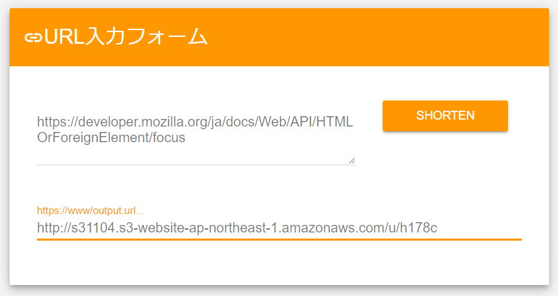
What you'll learn
- サーバレスとは何かを知る
- AWSでの開発方法を学ぶ
- AWSでサーバレスアプリケーションを実現してみる
概要
従来のアプリケーションでは、プログラムを実行するためには実行環境のサーバ構築やメンテナンスをする必要があった。
サーバ環境ではリクエストに応じて、実行環境であるサーバのCPUやメモリを増強しなければならなかった。
その労力から解放されるのがサーバレスの考え方であり、クラウドのデファクトスタンダードな考え方になりつつある。
AWSではAWS Lambdaがコアを担っており、Amazon SQSやCloudWatch, S3などがその周辺を補強している。
Why Lambda？
前述の通り、AWSが実行環境の面倒をみてくれる。
関数ごとの実行時間やメモリも管理可能であり、必要に応じてカスタマイズ・チューニングを行うことができる。
Lambdaでは複数のランタイム(実行環境)もサポートされ、面倒な設定抜きにすぐにアプリ開発を始められる。
従来ではRDSへのコネクションプーリングができないという課題があったが、RDS Proxyの登場により解決。
アーキテクチャ概要図 だいたいコレと同じ
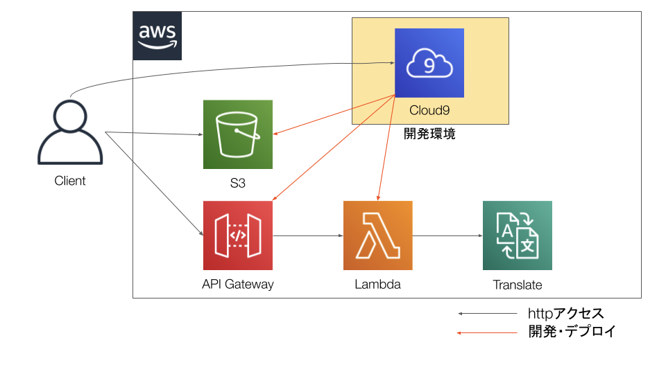
- ClientがブラウザでS3にアクセスし、html, css, jsのWebアプリを表示
- WebアプリからAPI Gatewayを経由してLambdaを呼び出し
- LambdaからTranslateを呼び出し
- LambdaからWebアプリに翻訳結果を返却・表示
※ Cloud9については後述
この章でやること概要
- AWSにログインする
- Cloud9を起動する
AWSにログインする
AWSコンソールにアクセスし、ログインする。
リージョンは東京(ap-northeast-1)に設定する。

Cloud9を起動する
Cloud9はブラウザでアクセス可能な、クラウドベースの統合開発環境(IDE)で、今回利用するLambdaでの開発を容易にしてくれる。
まずはCloud9コンソールにアクセスする。
環境を構築するため Create environment を選択する。
- Name environment で任意の Name を入力する。
- Configure settings で以下の通り設定値を選択する。
- Create a new EC2 instance for environment
- t2.micro (1 GiB RAM + 1 vCPU)
- Amazon Linux
- After 30 minutes
- Review で確認し問題なければ Create environment でCloud9を開始する。
正常にCloud9が作成されれば、以下のような画面が表示される。
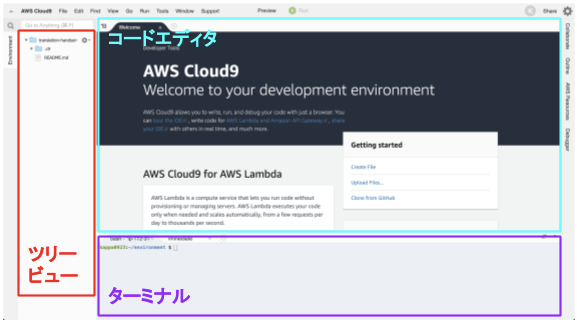
この章でやること概要
- Translateを呼び出すLambdaを作成する
- Lambdaをクライアントから呼び出すためのAPI Gatewayを作成する
Cloud9からリソース作成
Cloud9の右側のメニューから以下の通り選択する。
- AWS Resources を選択
- Lambda を選択
- Create a new Lambda function を選択
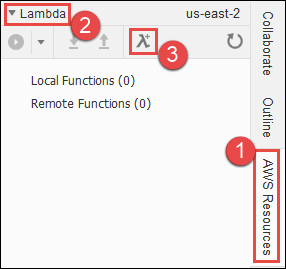
リソース作成ダイアログが表示されるので以下の通り選択する。
- Function name, Application name に任意の名前(postTranslateなど)を入力
- Next を選択
- Select runtime から Python 3.6 を選択
- empty-python のブループリントを選択
- Next を選択
- Function trigger は none を選択
- Security は NONE を選択
- Next を選択
- Memory は 128 MB を選択
- Role は Automatically generate role を選択
- Next を選択
- 設定を確認して Finish を選択
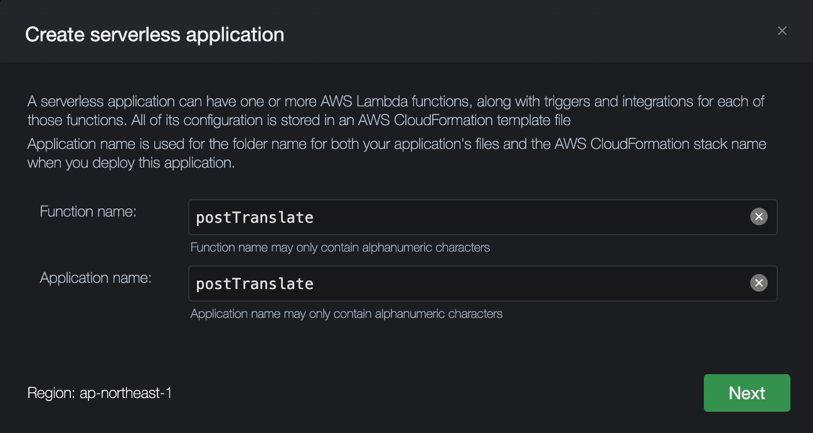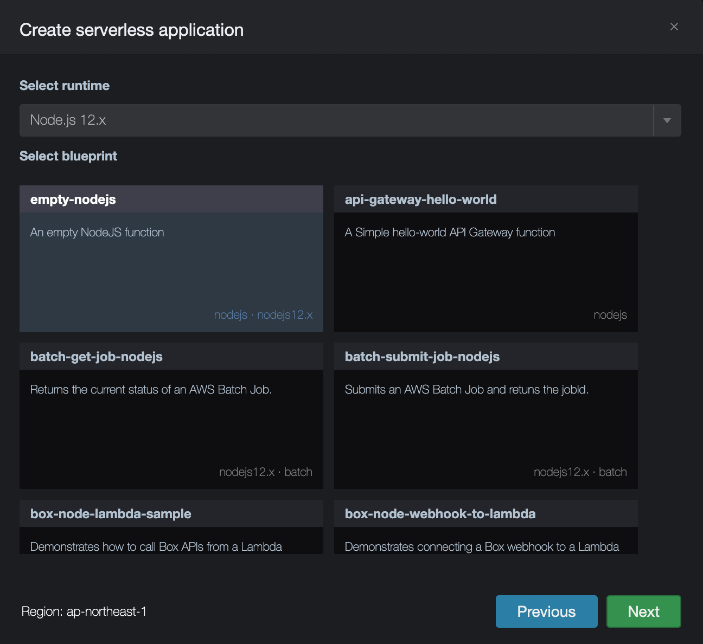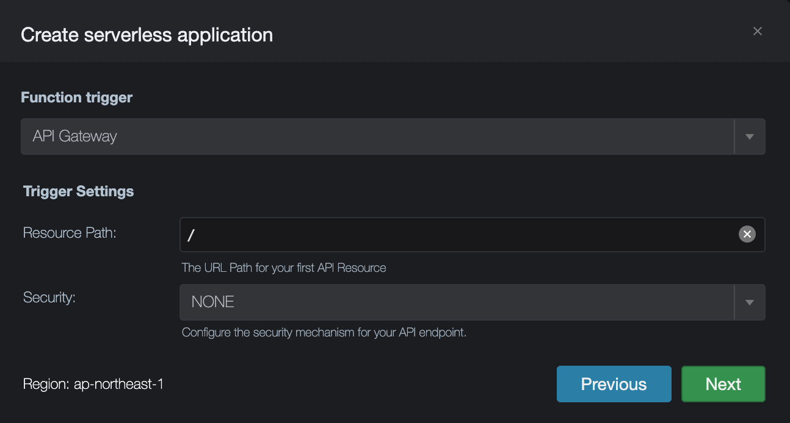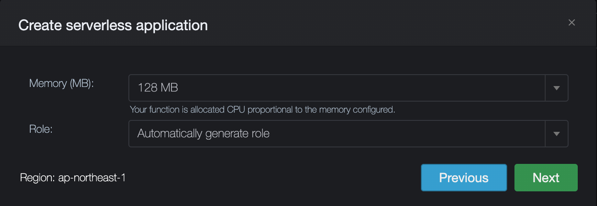
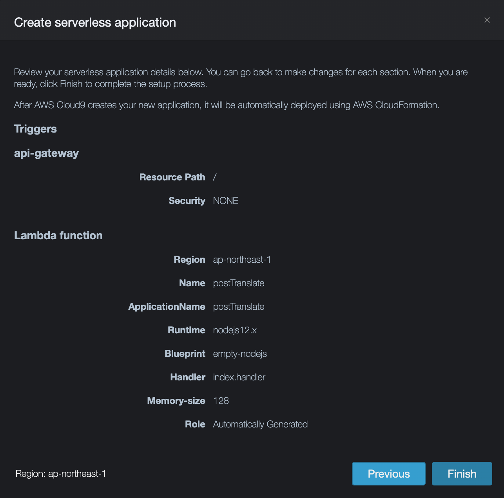
一通りのセットアップが完了すると、 index.js や Remote Functions にリソースができる。
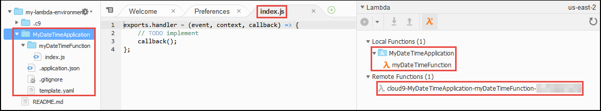
この章でやること概要
- Webアプリの資材をCloud9にアップロードする
- WebアプリからAPI呼び出し部分を修正する
- 資材をCloud9からS3にアップロードする
- S3のアプリを公開する
Webアプリの資材をS3にアップロードする
GitHubリポジトリ から今回使用する資材をダウンロードする。
ダウンロード後、ファイルを解凍し public フォルダを見つける。
ツリービューで今回作成したプロジェクト名を選択し、メニューから File > Upload Local Files... を選択する。
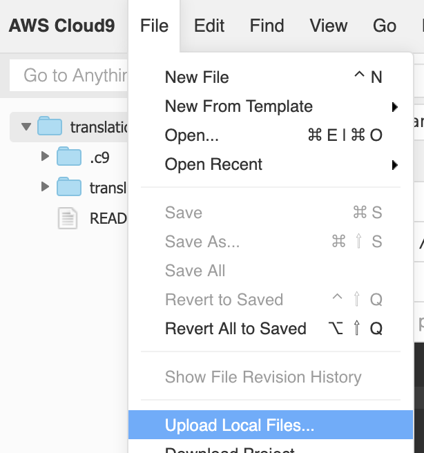
ファイルアップロードダイアログが表示されるため、 Select Folder を選択する。
先程解凍した publicディレクトリ を選択し、アップロードする。
アップロード後、ツリービューは以下のようになる。
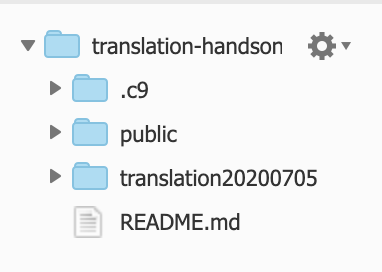
資材をCloud9からS3にアップロードする
S3コンソール にアクセスし、資材をアップロードするバケットを作成する。
バケットを作成する をクリックする。
バケット名 を入力して 作成 をクリックすると、バケットが作成される。
再びCloud9に戻り、以下のコマンドを実行する。
aws s3 sync public s3://<バケット名>
S3バケットを確認し、以下のようになっていればOK。
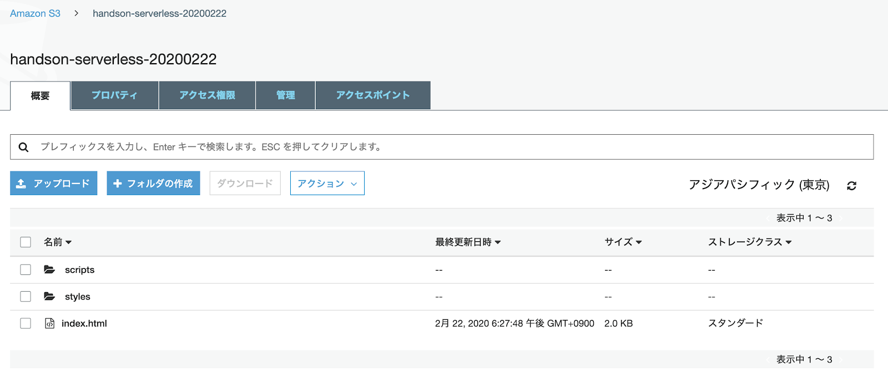
S3のアプリを公開する
S3バケットから アクセス権限 タブを選択し、 ブロックパブリックアクセス を選択する。
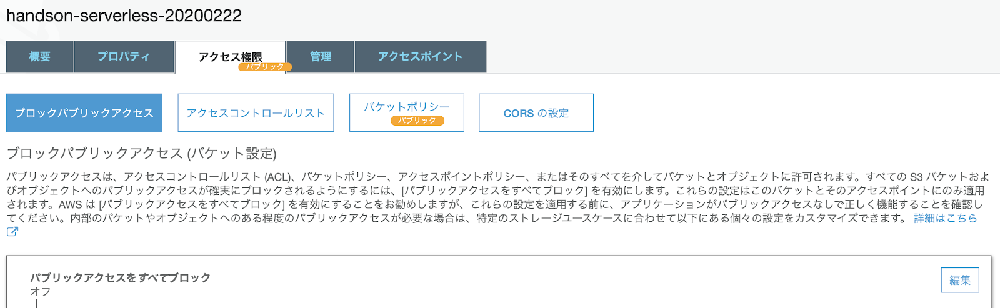
編集 をクリックして、以下のように設定する。
- パブリックアクセスをすべてブロック のチェックを外す
- 以下のチェックを入れる
- 「新しいアクセスコントロールリスト (ACL) を介して許可されたバケットとオブジェクトへのパブリックアクセスをブロックする」
- 「任意のアクセスコントロールリスト (ACL) を介して許可されたバケットとオブジェクトへのパブリックアクセスをブロックする」
- 保存を選択するとダイアログが表示されるため、 確認 を入力し確認を選択する
バケットポリシー を選択し、以下の内容を入力し保存する。
※ <バケット名> の部分は自分が作成したS3バケット名(handson-serverless-20200222など)に変更すること。
{
"Version": "2012-10-17",
"Statement": [
{
"Effect": "Allow",
"Principal": "*",
"Action": "s3:*",
"Resource": "arn:aws:s3:::<バケット名>/*"
}
]
}プロパティ タブを選択し、 Static web hosting カードを選択する。
このバケットを使用してウェブサイトをホストする を選択し、インデックスドキュメントに index.html と入力する。
他のフィールドは空白のままで、 保存 を選択する。
このとき、上部に表示されている エンドポイント のURLを控えておく。
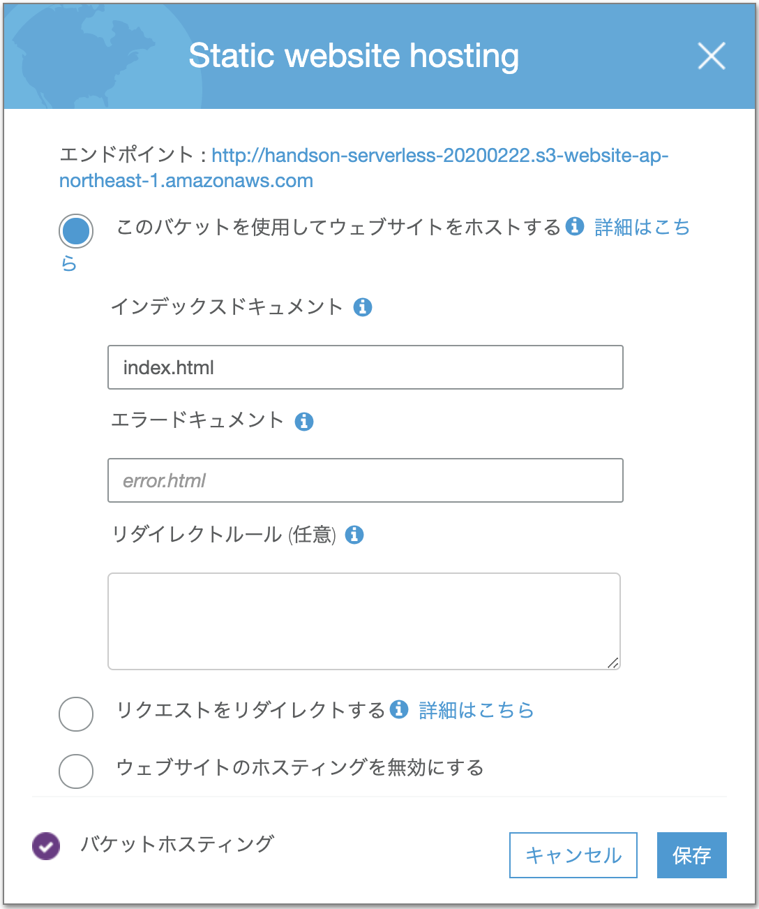
これでWebアプリのデプロイ完了。
控えておいたURLにアクセスすると、作成したWebページにアクセスできる。
この章でやること概要
- LambdaからS3を呼び出すための設定
- Lambdaのコードを作成
LambdaからS3を呼び出すための設定
Lambdaコンソール にアクセスし、今回作成した関数を選択する。
アクセス権限 を選択する。
実行ロール のロール名を選択し、LambdaのIAMロール設定画面を開く。
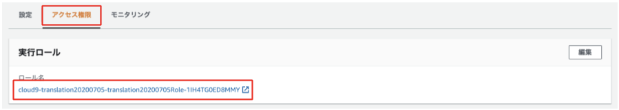
ポリシーをアタッチします を選択する。
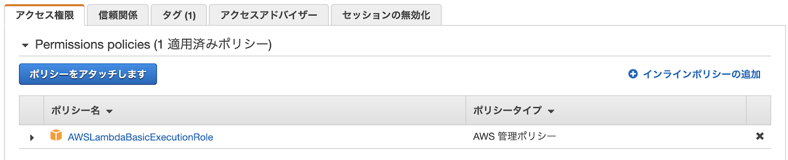
AmazonS3FullAccess を検索・選択し、 ポリシーのアタッチ を選択する。
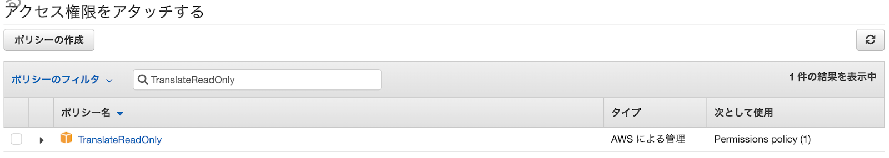
Lambdaのコード作成
Cloud9に戻り、Lambda用のコードを編集する。
ツリービューから lambda_function.py を選択し、コードエディタで開く。
以下のコードを貼り付け、
BUCKET_NAMEに先ほど作成したバケットの名前を入れて、保存する。
lambda_function.py
import boto3
import random
import string
import json
BUCKET_NAME = 'your-bucket-name'
def generate_random(n):
return ''.join(random.SystemRandom().choice(string.ascii_lowercase + string.digits) for _ in range(n))
def get_public_url(bucket):
s3client = boto3.client('s3')
bucket_location = s3client.get_bucket_location(Bucket=bucket)
return "http://{0}.s3-website-{1}.amazonaws.com/".format(
bucket,
bucket_location['LocationConstraint'])
def lambda_handler(event, context):
s3resorce = boto3.resource('s3')
bucket = s3resorce.Bucket(BUCKET_NAME)
short_id = generate_random(5)
short_key = "u/" + short_id
body = event.get("body")
res = bucket.put_object(
Key=short_key,
Body=b"",
WebsiteRedirectLocation=body,
ContentType='text/plain'
)
public = get_public_url(BUCKET_NAME)
shorten_url = (public + short_key)
return {
'statusCode': 200,
'headers': {
"Access-Control-Allow-Origin": "*"
},
'body': json.dumps(shorten_url)
};この章でやること概要
- Cloud9上でLambda関数をローカル実行
- API Gateway経由でローカル実行
Cloud9上でLambda関数をローカル実行する
画面右側の AWS Resources から Local Functions 内の関数名を右クリックする。
Run > Run Local を選択する。
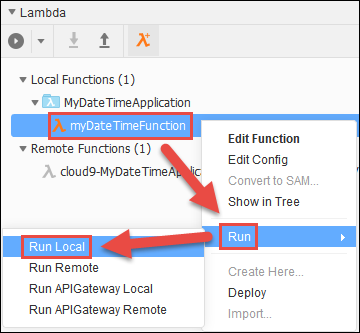
Payload タブに以下の内容を入力し、 Runボタン を選択するとLambdaがローカルで実行される。
{
"body": "https://markingcloud.connpass.com/event/193042/"
}実行が完了すると、Lambdaのログが画面中央に表示される。
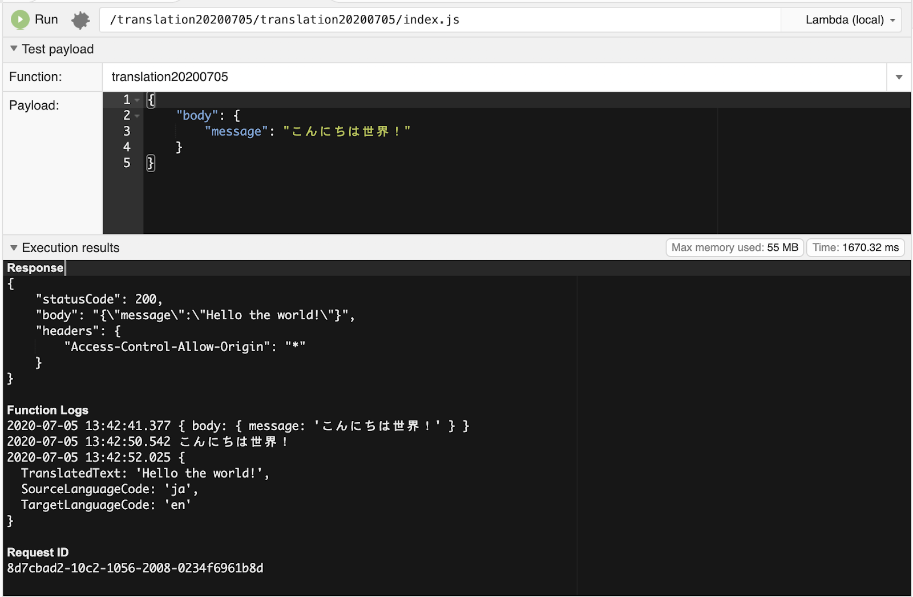
Lambdaデプロイ
ここまで確認出来たらLambdaをデプロイする。
画面右側の AWS Resources から Local Functions 内の関数名を右クリックする。
Deploy を選択するとLambdaに関数がデプロイされる。
この章でやること概要
- API Gatewayを設置する
API Gatewayを設置
API Gatewayコンソール にアクセスする。
APIを作成をクリック。
HTTP APIの構築をクリック。
統合を追加からLambdaを選択し、先ほど作成した関数を選択。
適当な名前を付けて次へ。
リソースパスを「/」にして次へ。
ステージの設定はデフォルトのまま次へ。
内容を確認して作成をクリック。
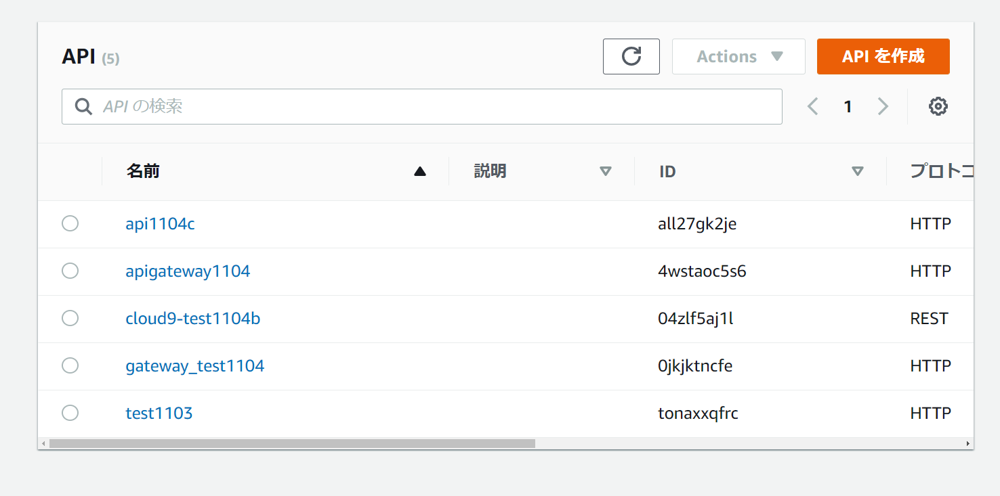
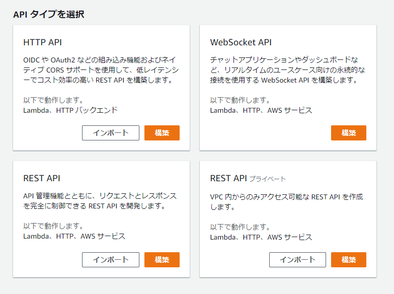
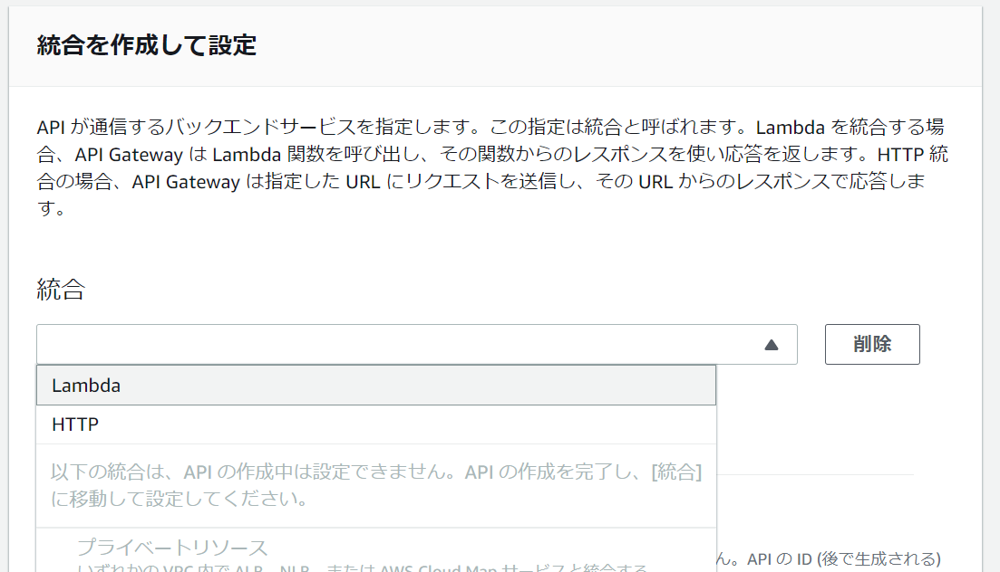
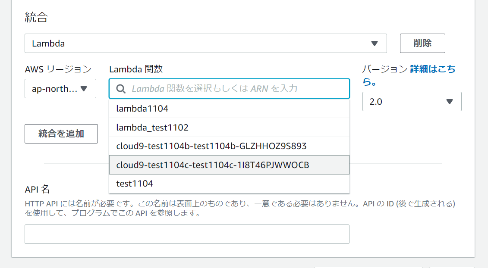
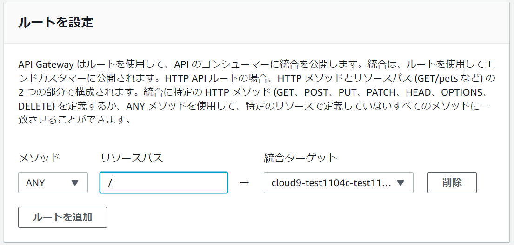
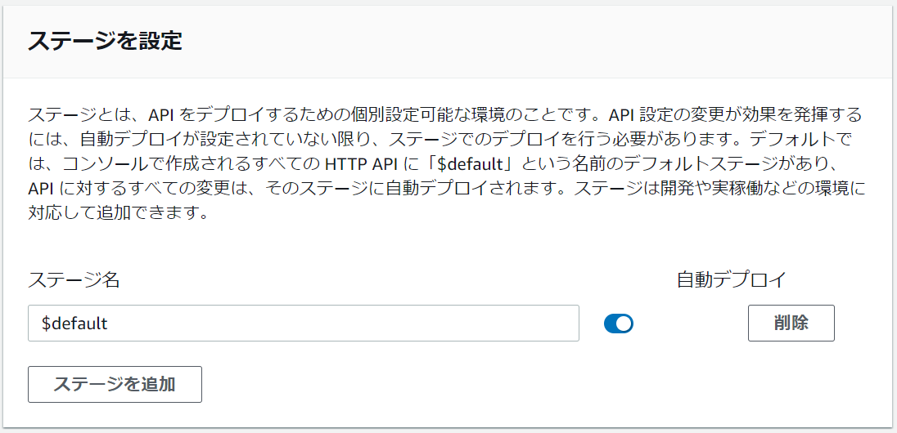
Lambdaデプロイ
画面右側の AWS Resources から Local Functions 内の関数名を右クリックする。
Deploy を選択するとLambdaに関数がデプロイされる。
この章でやること概要
API GatewayのURLをコピーする。
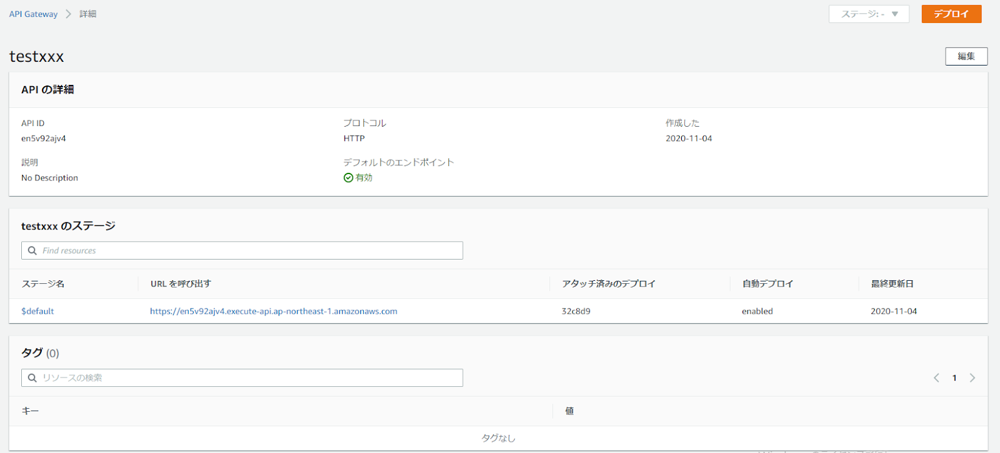
Cloud9から public/script/main.js を開く
apiurlの値をコピーしたURLに書き換える。
// Shorten the URL
UrlShortner.prototype.shortenUrl = async function (e) {
e.preventDefault();
const apiurl = "apigateway URL"
const param = {
method: "POST",
mode: "cors",
body: this.input.value
}
try {
const response = await fetch(apiurl, param)
if (!response.ok) throw "ok propertyi is false"
const body = await response.json()
this.output.value = body
this.output.focus()
this.successSnackbar();
} catch (err) {
console.log(err)
this.errorSnackbar();
}
};
再度、以下のコマンドを実行する。
aws s3 sync public s3://<バケット名>
これでWebアプリの完成！
S3バケットウェブサイトエンドポイントにアクセスると、作成したWebページにアクセスできる。
AWSの機能を使ってサーバレスアプリを構築することができました！
クラウドを有効活用すると開発環境の用意も含め、これだけの時間で便利なアプリを作れます。
What we've covered
- Cloud9を利用したAWSでの開発方法
- LambdaとAPI Gatewayを組み合わせたAPIの作成
- AWS Translate APIの利用方法
- S3でのWebアプリ公開方法
Next Steps
- 今回はCI/CDは考えていませんが、頻繁に更新するのであればCI/CDも構築しましょう。特に、Lambda + API GatewayはServerless Frameworkなどのツールも用意されており、CI/CDに組み込みやすい。
- S3だけだとWebアプリがSSL/TLS暗号化に対応しておらず、カスタムドメインにも対応していません。これらに対応するにはCloudFrontを使いましょう。
後始末
- 不要なリソースが残っているとお金がかかるので、要らなければ削除しましょう。
- 作成されたS3バケットの中身も空にしておきます。
- Cloud9もEC2の料金がかかったりするので削除しておきましょう。
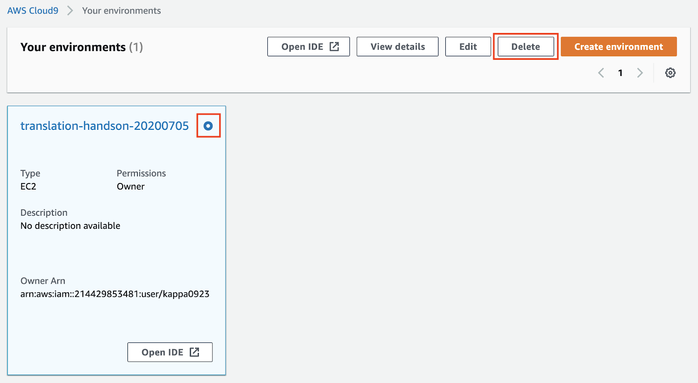
補足
- Amazon Translateはカスタム辞書にも対応しています。
ブランド名やキャラクター名を翻訳したい場合は活用してみましょう。
https://docs.aws.amazon.com/ja_jp/translate/latest/dg/how-custom-terminology.html